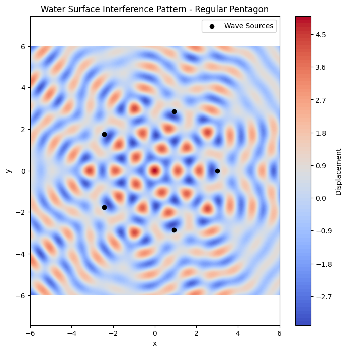
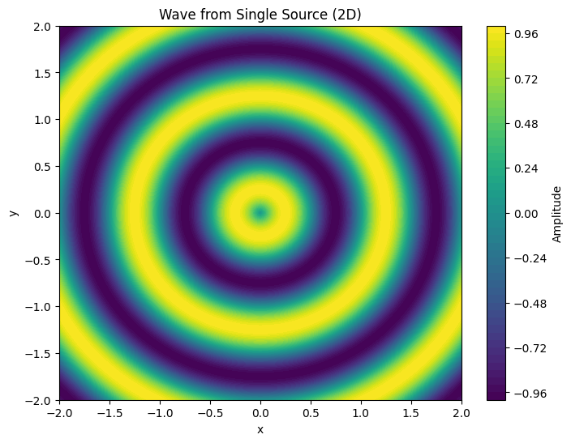
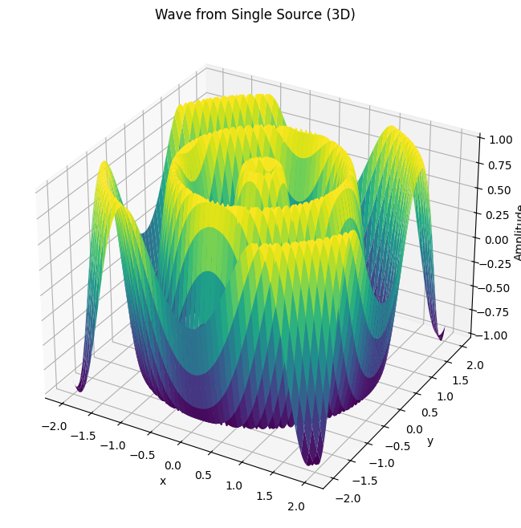
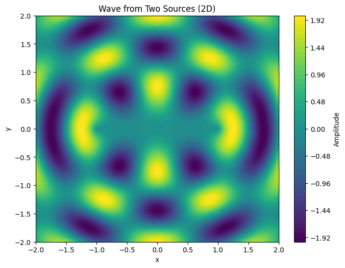
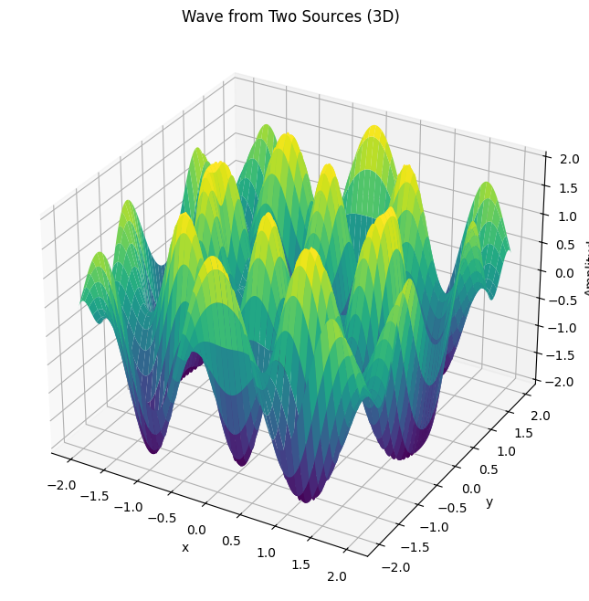
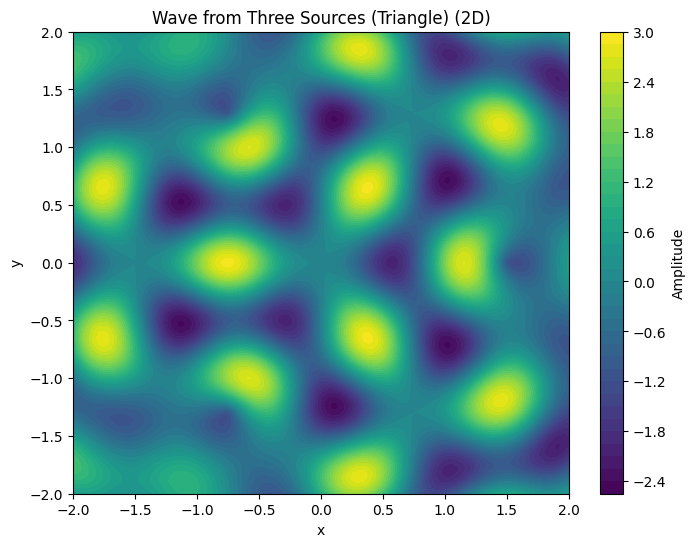
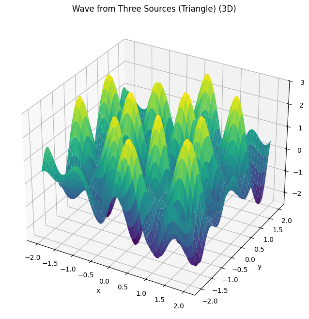

Problem 1
Interference Patterns on a Water Surface
Fundamentals of Waves
- Amplitude (A): The maximum displacement from equilibrium.
- Wavelength $$ \lambda $$ The distance between successive crests.
- **Wave number $$ k \(\(**\)\) k = \frac{2\pi}{\lambda} $$
- Frequency (f): The number of oscillations per unit time.
- Angular frequency $$ \omega $$ $$ \omega = 2\pi f $$
- Phase $$ \phi $$ Describes the wave's shift at a point.
A single disturbance from a point source is modeled as
where $$ r_i = \sqrt{(x - x_i)^2 + (y - y_i)^2} $$ is the distance from the $$ i $$-th source to point $$ (x, y) $$
The total displacement at point $$ (x, y) $$ is:
Numerical Parameters and Calculations
Let's assume the following values: - Amplitude: $$ A = 1.0 $$ - Wavelength: $$ \lambda = 1.0 \Rightarrow k = \frac{2\pi}{1} = 6.2832 $$ - Frequency: $$ f = 1.0 \Rightarrow \omega = 2\pi f = 6.2832 $$ - Initial Phase: $$ \phi = 0 $$ - Radius of the polygon: 3 units
Each wave source is described by:
where $$ r_i $$ is the distance from each source at the vertex of the pentagon.
The resulting wave field is the sum of all five such terms.
Python Code
import numpy as np
import matplotlib.pyplot as plt
import matplotlib.animation as animation
# Wave parameters
A = 1.0 # Amplitude
wavelength = 1.0 # Wavelength
k = 2 * np.pi / wavelength # Wave number
f = 1.0 # Frequency
omega = 2 * np.pi * f # Angular frequency
phi = 0 # Initial phase
# Define the regular polygon (pentagon)
def regular_polygon(n_sides, radius=3):
return [(radius * np.cos(2 * np.pi * i / n_sides),
radius * np.sin(2 * np.pi * i / n_sides)) for i in range(n_sides)]
sources = regular_polygon(5) # 5 for pentagon
# Define the grid
x = np.linspace(-6, 6, 500)
y = np.linspace(-6, 6, 500)
X, Y = np.meshgrid(x, y)
# Superposition function
def wave_interference(x, y, sources, t):
result = np.zeros_like(x)
for (x0, y0) in sources:
r = np.sqrt((x - x0)**2 + (y - y0)**2)
result += A * np.cos(k * r - omega * t + phi)
return result
# Static Plot at t = 0
Z = wave_interference(X, Y, sources, 0)
plt.figure(figsize=(8, 8))
plt.contourf(X, Y, Z, levels=100, cmap='coolwarm')
plt.colorbar(label='Displacement')
plt.scatter(*zip(*sources), color='black', label='Wave Sources')
plt.legend()
plt.title('Water Surface Interference Pattern - Regular Pentagon')
plt.xlabel('x')
plt.ylabel('y')
plt.axis('equal')
plt.show()







Observations
- Constructive Interference: Bright/red regions where waves reinforce.
- Destructive Interference: Dark/blue regions where waves cancel.
Numerical Parameters and Calculations
- Amplitude: $$ A = 1.0 $$
- Wavelength: $$ \lambda = 1.0 \Rightarrow k = \frac{2\pi}{\lambda} = \frac{2\pi}{1.0} = 6.2832 $$
- Frequency: $$ f = 1.0 \Rightarrow \omega = 2\pi f = 6.2832 $$
- Initial Phase: $$ \phi = 0 $$
- Polygon Radius: $$ R = 3 $$ units (distance from center to each vertex)
Step-by-Step Example
Let’s compute the displacement at point $$ (x, y) = (0, 0) $$ at time $$ t = 0 $$ from one source located at $$ (x_1, y_1) = (3, 0) $$ (one vertex of the pentagon):
- Distance from source:
$$ r_1 = \sqrt{(x - x_1)^2 + (y - y_1)^2} = \sqrt{(0 - 3)^2 + (0 - 0)^2} = 3 $$
- Wave contribution from that source:
$$ u_1 = A \cos(k r_1 - \omega t + \phi) = \cos(6.2832 \cdot 3 - 6.2832 \cdot 0 + 0) = \cos(18.8496) \approx -1 $$
-
all 5 vertices, and sum:
$$ U(0, 0, 0) = \sum_{i=1}^{5} \cos(6.2832 \cdot r_i) $$
wave contributions from each of the 5 pentagon vertices to the point at the center of the polygon, i.e., $ (x, y) = (0, 0) $, at time $ t = 0 $.
Step-by-Step Calculation at Point (0, 0), Time $t = 0 $
- Amplitude $ A = 1.0 $
- Wavelength $ \lambda = 1.0 \Rightarrow k = \frac{2\pi}{\lambda} = 6.2832 $
- Frequency $ f = 1.0 \Rightarrow \omega = 2\pi f = 6.2832 $
- Phase $ \phi = 0 $
- Radius of pentagon: $ R = 3 $
Vertex Coordinates of Pentagon
The 5 vertices of a regular pentagon centered at the origin, with radius 3 units:
| Vertex | $ x_i $ | $ y_i $ |
|---|---|---|
| 1 | $ 3.0000 $ | $ 0.0000 $ |
| 2 | $ 0.9270 $ | $ 2.8532 $ |
| 3 | $ -2.4271 $ | $ 1.7634 $ |
| 4 | $ -2.4271 $ | $ -1.7634 $ |
| 5 | $ 0.9270 $ | $ -2.8532 $ |
Distance to (0, 0) from Each Vertex:
We compute:
$$ r_i = \sqrt{x_i^2 + y_i^2} $$
Since all points are exactly 3 units from the center, we have:
\(\(r_1 = r_2 = r_3 = r_4 = r_5 = 3\)\)
Wave Contribution from Each Source
Using:
So each of the five wave contributions is 1.0 at that moment.
Final Total Displacement at (0, 0), \( t = 0 \):
Summary Table
| Vertex | Coordinates (x, y) | Distance 4 r_i $ | $u_i = \cos(k r_i) $ |
|---|---|---|---|
| 1 | (3.0000, 0.0000) | 3.0000 | 1.0 |
| 2 | (0.9270, 2.8532) | 3.0000 | 1.0 |
| 3 | (-2.4271, 1.7634) | 3.0000 | 1.0 |
| 4 | (-2.4271, -1.7634) | 3.0000 | 1.0 |
| 5 | (0.9270, -2.8532) | 3.0000 | 1.0 |
| Total Displacement | 5.0 |